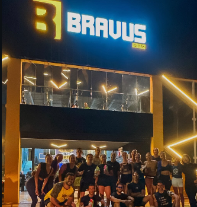

Análise do Mercado de Trabalho em Timbaúba - PE
Um estudo sobre profissões, oportunidades e a importância do planejamento do Projeto de Vida.
Este blog apresenta uma análise do mercado de trabalho no município de Timbaúba - PE, realizada através de entrevistas com profissionais de diferentes áreas.
O objetivo é mostrar aos jovens a importância da educação, qualificação profissional e planejamento para construir um futuro com mais oportunidades.
Conhecer diferentes profissões ajuda na escolha de caminhos profissionais e fortalece a criação de um Projeto de Vida.

A profissional da Yamaha apresentou sua experiência no setor de vendas e atendimento ao cliente. A entrevista mostrou que organização, comunicação, responsabilidade e conhecimento sobre o mercado são características importantes para crescer no trabalho.

A OAB possui um papel importante no apoio aos profissionais da área jurídica. A entrevista mostrou que organização, comunicação e busca constante por conhecimento são fundamentais para crescer na carreira.

Gilmar apresentou sua experiência no empreendedorismo, mostrando que planejamento financeiro, responsabilidade e dedicação são essenciais para manter um negócio.

Eric concilia trabalho e estudos na área da saúde. Sua trajetória demonstra que dedicação e formação profissional podem abrir novas possibilidades para o futuro.

A academia representa o setor de saúde e qualidade de vida, mostrando como diferentes áreas profissionais contribuem para o desenvolvimento da comunidade.
As entrevistas mostram que alcançar objetivos profissionais depende de preparação, disciplina, ética e aprendizado contínuo.
O mercado de trabalho está em constante mudança e exige que os jovens desenvolvam habilidades, busquem conhecimento e planejem seus próximos passos.
A análise do mercado de trabalho em Timbaúba permitiu compreender os desafios e oportunidades presentes em diferentes profissões.
Planejar o futuro desde cedo, investir nos estudos e desenvolver novas habilidades são atitudes importantes para conquistar crescimento pessoal e profissional.